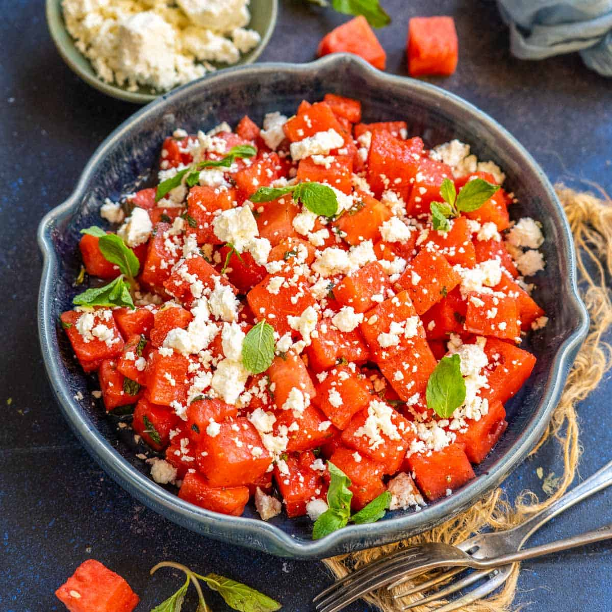

Watermelon Feta Salad

This chunky watermelon feta salad with arugula and tomatoes is enjoyed by all.
Thanks to the watermelon, the kids also like it.
Nutriton Facts
- Calories: 131
- Fat: 8g
- Carbs: 12g
- Protein: 3g
Ingredients
- 3 Tablespoons Of Olive Oil
- 2 Teaspoons Of White Balsamic Vinegar
- 1/2 Teaspoon Kosher Salt
- 8 Ounces Grape Tomatoes, Halved
- 3 Cups Of Arugula
- 1 Cup Sliced Red Onion
- 2 Pounds Watermelon, Cubed
- 4 Pounds Feta Cheese, Cut Into 1/4 Cubes
Directions
Whisk olive oil, vinegar and salt together in a large mixing bowl.
Add tomatoes, arugula and red onion; toss to coat. Gently stir in
watermelon and feta cheese to serve.
Go Back